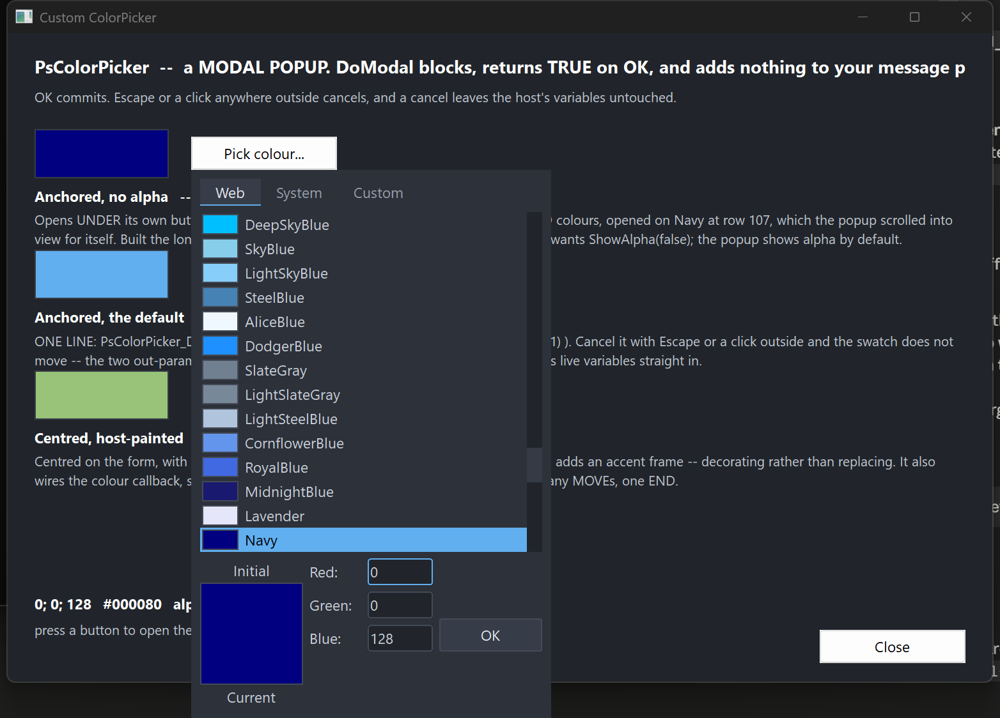

PsColorPicker
A modal colour picker popup for FreeBASIC / Win32, owner-drawn throughout, built on AfxNova and PsBufferPaint.
Repository: github.com/PaulSquires/PsColorPicker
PsColorPicker_DoModal puts a chromeless popup on screen, blocks until the user answers, and returns TRUE with the chosen colour written back — or FALSE if they abandoned it, in which case your variables are left exactly as they were. There is no caption bar, no Cancel button, and nothing to place in a parent window: it is a call you make, not a control you lay out.
The popup holds a tab strip (Web, System, Custom), a body that is either a scrolling list of named colours or a tint/shade matrix, an Initial/Current preview split across one box, a column of R/G/B/Alpha entry fields, and an OK button. OK is the only thing that commits; Escape and a click anywhere outside both cancel.
It is a complete interaction on its own — you do not build a dialog around it, and it adds nothing to your message loop.
What it looks like

The popup dropped under the button that opened it: the Web tab scrolled to the currently selected colour, the split Initial/Current preview with its labels above and below, the field column, and the OK button. Alpha is hidden here — it is shown by default and this host turned it off.
Requirements
| File | Why |
|---|---|
PsColorPicker.bi | The public surface. |
PsColorPicker.inc | The implementation. |
PsBufferPaint.bi / PsBufferPaint.inc | The flicker-free drawing surface everything is painted through. |
PsVScrollBar.bi / PsVScrollBar.inc | The list scrollbar. You never reference it, but the files must be present. |
PsColorPicker_SelfTest.inc is not optional if you take PsColorPicker.inc unaltered — the implementation includes it at the end. Either copy it along with the rest, or delete that #include once line.
Include order
PsColorPicker.bi includes PsBufferPaint.bi and PsVScrollBar.bi for you, and PsColorPicker.inc includes PsVScrollBar.inc for you. So the only thing you must get right is that PsBufferPaint.inc precedes PsColorPicker.inc:
#include once "windows.bi"
#include once "AfxNova\CWindow.inc"
#include once "AfxNova\AfxStr.inc"
#include once "AfxNova\AfxGdiplus.inc"
using AfxNova
#include once "PsBufferPaint.inc"
#include once "PsColorPicker.inc"GDI+ must be running
All geometry is drawn through GDI+. Initialise it before the first repaint and shut it down after every window is gone; without the bracket the popup draws nothing at all.
dim as ULONG_PTR gdipToken = AfxGdipInit()
' ... run your application ...
AfxGdipShutdown( gdipToken )Never name an identifier ok
GDI+ defines Ok = 0 as a Status enum value in namespace AfxNova, and your host almost certainly says using AfxNova. Any variable, parameter or function of yours called ok becomes a duplicate definition the moment you adopt this control. Use bOK.
There is no pump obligation
There is no PsColorPicker_FilterMessage, and you should not go looking for one. If you are coming from PsComboBox, PsDatePicker, PsTextBox or PsMenuBar, each of which requires a call in your message loop, this control is the opposite case: PsColorPicker_DoModal runs its own GetMessage loop, and that loop owns IsDialogMessage, the Escape key and the outside-click test. While the popup is up, your loop is not running at all.
You do not need to SetFocus anything beforehand either — the popup focuses itself.
The one thing worth doing on your side is restoring focus after DoModal returns. The popup took the focus and has since been destroyed, so your window is left with no focused child and the next Tab does nothing:
if PsColorPicker_DoModal( hwnd, gMyColor, gMyAlpha ) then
' ... use the new colour ...
end if
SetFocus( hButtonThatOpenedIt )Quick start
The whole integration, for a host that wants the default popup dropped under the control that opened it:
private sub OnPickColour( byval hwnd as HWND, byval hButton as HWND )
' Screen coordinates. The popup hangs off this rect, flipping above it if it will not fit
' below.
dim as RECT rcAnchor
GetWindowRect( hButton, @rcAnchor )
' gMyColor and gMyAlpha are read on the way in as the starting value, and written on the way
' out ONLY if the user pressed OK -- so a cancel needs no handling.
if PsColorPicker_DoModalForRect( hwnd, rcAnchor, gMyColor, gMyAlpha ) then
InvalidateRect( hwnd, NULL, TRUE )
end if
SetFocus( hButton )
end subPsColorPicker_DoModal( hwnd, gMyColor, gMyAlpha ) is the same thing centred on hwnd instead of anchored to a control.
If you need to configure the popup first — a font, a paint callback, a starting tab, the alpha row turned off — build it the long way instead. These calls are exactly what DoModal does:
dim as HWND hPick = PsColorPicker_Create( hwnd, 0 )
PsColorPicker_SetFont( hPick, ghFontGui )
PsColorPicker_ShowAlpha( hPick, false )
PsColorPicker_SetColor( hPick, gMyColor, 255, false )
PsColorPicker_PositionForRect( hPick, rcAnchor )
if PsColorPicker_RunModal( hPick ) then
gMyColor = PsColorPicker_GetColor( hPick )
gMyAlpha = PsColorPicker_GetAlpha( hPick )
end if
DestroyWindow( hPick )Concepts
The value is a COLORREF and a separate alpha
GetColor returns a COLORREF; GetAlpha returns a ubyte alongside it. Alpha never travels inside the colour, and committing the alpha field cannot disturb the RGB. That is why the modal entry points take two byref out-parameters rather than returning a single value — and it is also what lets a cancel leave both untouched, which a sentinel return could not express.
Initial and Current
SetColor establishes both the live value and the "Initial" baseline, unless you pass bKeepInitial = true. The preview box is split across its middle: the top half is Initial, the bottom half Current, with the two labels drawn above and below the box. Clicking the Initial half reverts — that pair is the popup's only reset, so it behaves as the thing it looks like. Clicking the Current half does nothing.
Placement
Both placement routines size the window to GetIdealSize first, then position it, then clamp it onto the work area of the monitor it lands on.
PositionForRect drops the popup under the anchor and flips it above when it will not fit below. That is not cosmetic: a popup merely clamped upward ends up covering its own anchor, and then the opening click's release lands inside it and dismisses it immediately.
Geometry is derived, never set
Every rect is computed from the layout inputs; there are no rect setters. The layout is lazy — mutators mark it stale and the next paint or geometry query does one measuring pass, so a burst of setters costs one re-layout rather than one each.
The bottom block is three columns:
[ "Initial" label ]
[ preview, top half ] [ Red: ][field]
[ preview, bottom half ] [ Green: ][field]
[ "Current" label ] [ Blue: ][field] [ OK ]
[ Alpha: ][field]The block is as tall as its tallest column, and the preview column is taller than the fields. One consequence is worth knowing: ShowAlpha adds or removes a whole field row but does not change the popup's size, because the row comes and goes inside space the preview had already claimed. You can flip it without re-placing an anchored popup.
The OK button is bottom-aligned on the last visible field row, so hiding alpha moves it up.
The matrix is a law, not a table
The Custom tab's grid is generated: lightness runs down the rows as 1 - (row + 0.5) / rows, hue runs across the chromatic columns, and the last column is a greyscale ramp. There is no table of colours to look up. Changing SetMatrixSize therefore gives you a finer or coarser sweep of the same colours, not a cropped or stretched version of a fixed picture.
PsColorPicker_MatrixColorAt is public and pure, so you can generate the same colours yourself without a window.
Tabs
Three, always present. Web and System are scrolling lists of named rows — a swatch, then the name — sharing one renderer and one hit test; Custom is the matrix. Each tab is as wide as its own caption plus padding, laid left to right from the strip's left edge, so the strip's right-hand remainder is empty.
The body is a fixed height across all three tabs. A body that resized as the user browsed would grow an already-placed popup off the bottom of the monitor.
Selection follows the value
There is one selection index, shared by whichever tab is showing, and it is re-derived from the colour whenever the colour or the tab changes. A colour that is not present on the current tab selects nothing rather than snapping to a nearest match. When a list holds the same colour twice, the first entry wins.
Focus
The entry fields are drawn and key-handled by the control itself — there is no inner child holding a caret — so GetFocus() = hCtrl is true when the popup has focus. There is no _HasFocus helper and none is needed.
Behaviour and limits
- OK is the only commit. Escape, and a button-down anywhere outside the popup, both cancel. There is no Cancel button.
- The parent is not disabled while the popup is up. It cannot be — a click on a disabled window generates nothing, and that click is how the popup is cancelled. "Modal" here means the call blocks, not that the rest of your application is inert.
- Accepting commits a half-typed field; cancelling discards it. A user who types
128and presses OK gets 128. One who types128and presses Escape does not. - The entry fields are deliberately minimal. Digits, Backspace, Delete, arrows, Home/End and Tab, and nothing else. No selection, no clipboard, no undo. If you need those, put a
PsTextBoxon your own dialog rather than expecting them here. - There is no hex field.
PsColorPicker_FormatHex/ParseHexare public and pure if you want#RRGGBBfor storage or display. - There is no palette of your own named colours, and no eyedropper, no multi-select, no tooltips, and no way to type a colour by name — although Web and System are named lists you pick from.
- Values clamp, they do not wrap. A channel field takes at most three digits and is clamped to 0..255 on commit; the field is then re-seeded so the user sees what their
999became. An empty field is discarded and the value left alone. - A double-click on a body cell accepts — the mouse's equivalent of Enter. It adopts the cell under the cursor and then commits, so double-clicking a cell that is not the selected one answers with the one you hit. A double-click anywhere else — a tab, a field, the preview, the OK button — behaves as an ordinary click there and cannot close the popup. The cost is on the matrix: a rapid second click commits rather than starting a second drag.
- Overflow is honest, not squeezed. If you set a matrix bigger than the window, cells fall outside the body and are clipped rather than being scaled down.
API reference
Running it
| Function | Behaviour |
|---|---|
PsColorPicker_DoModal( hParent, byref clr, byref nAlpha ) as boolean | Creates, centres on hParent, blocks, destroys. TRUE on OK, with both out-parameters written; FALSE on cancel, with neither touched. hParent may be NULL, in which case it centres on the monitor holding the cursor. |
PsColorPicker_DoModalForRect( hParent, byref rcAnchor, byref clr, byref nAlpha ) as boolean | The same, dropped under rcAnchor (screen coordinates) and flipped above it when it will not fit below. |
PsColorPicker_Create( hParent, id = 0 ) as HWND | Creates the popup without showing it, so you can reach the setters first. hParent becomes the owner, not the parent. You own the window and must DestroyWindow it. |
PsColorPicker_RunModal( hCtrl ) as boolean | Shows the popup and runs the nested loop. TRUE on OK. Does not destroy the window. |
PsColorPicker_PositionForRect( hCtrl, byref rcAnchor ) | Sizes to ideal, places under the anchor with the flip-above rule, clamps to the work area. Does not show. |
PsColorPicker_PositionCentered( hCtrl, hParent ) | Sizes to ideal and centres on hParent, or on the monitor holding the cursor when hParent is NULL. Does not show. |
Value
| Function | Behaviour |
|---|---|
PsColorPicker_SetColor( hCtrl, clr, nAlpha = 255, bKeepInitial = false ) | Sets the live value. Silent. Also re-establishes the Initial baseline unless bKeepInitial is true. |
PsColorPicker_GetColor( hCtrl ) as COLORREF | The live colour. |
PsColorPicker_GetAlpha( hCtrl ) as ubyte | The live alpha. |
PsColorPicker_SetInitial( hCtrl, clr, nAlpha = 255 ) | Sets the baseline shown as "Initial" without touching the live value. Silent. |
PsColorPicker_GetInitial( hCtrl ) as COLORREF | The baseline colour. |
PsColorPicker_RevertToInitial( hCtrl ) | Sets the live value back to the baseline. An action, not a setter, so it fires the change callback with a single END phase. |
Tabs and fields
| Function | Behaviour |
|---|---|
PsColorPicker_SetTab( hCtrl, nTab ) | Selects a tab. Silent. Refuses anything outside CLR_TAB_WEB..CLR_TAB_CUSTOM, leaving the current tab in place. Resets the scroll position and re-derives the selection. |
PsColorPicker_GetTab( hCtrl ) as long | The current tab. |
PsColorPicker_ShowAlpha( hCtrl, bShow ) | Shows or hides the Alpha field row. Shown by default. Hiding it while the caret is in it commits that field first. Changes the field count and the OK button's position, but not the popup's size. |
PsColorPicker_IsAlphaShown( hCtrl ) as boolean | Whether the Alpha row is placed. |
PsColorPicker_TabName( idx ) as DWSTRING | The caption on tab idx; "" out of range. The tab strip measures this to size each tab. |
Appearance
| Function | Behaviour |
|---|---|
PsColorPicker_SetColors( hCtrl, pColors ) | Copies your PSCOLORPICKER_COLORS in. The control keeps a copy and never reads a host global. |
PsColorPicker_GetColors( hCtrl, pColors ) | Copies the current colours out. |
PsColorPicker_SetFont( hCtrl, hFont ) | Sets the text font. You keep ownership of the HFONT. Re-measures, because the tab strip is as wide as its captions. |
PsColorPicker_GetFont( hCtrl ) as HFONT | The font, or 0 if none was set (the stock GUI font is used). |
PsColorPicker_SetOKText( hCtrl, Text ) | The OK button's caption. |
PsColorPicker_SetPreviewText( hCtrl, TextInitial, TextCurrent ) | The two preview labels. |
PsColorPicker_SetFieldText( hCtrl, nField, Text ) | The label beside one field, in CLR_FIELD_* order. Defaults carry their trailing colon ("Red:"); nothing is appended, so omit it if you do not want one. Re-measures. |
PsColorPicker_Refresh( hCtrl ) | Marks the layout stale and repaints. |
State
| Function | Behaviour |
|---|---|
PsColorPicker_SetEnabled( hCtrl, bEnabled ) | Goes through EnableWindow, so the system enforces it rather than it being a cosmetic flag. |
PsColorPicker_GetEnabled( hCtrl ) as boolean | Whether the popup is enabled. |
PsColorPicker_GetFocused( hCtrl ) as boolean | Whether the popup has the keyboard focus. |
Geometry and layout
| Function | Behaviour |
|---|---|
PsColorPicker_GetIdealSize( hCtrl, byref cx, byref cy ) | The size the popup wants. Valid before the window has ever been sized, which is what the placement routines rely on. Varies with the matrix and cell size and with the font; does not vary with ShowAlpha. |
PsColorPicker_GetMatrixSize( hCtrl, byref nCols, byref nRows ) | The Custom grid's dimensions. |
PsColorPicker_SetMatrixSize( hCtrl, nCols, nRows ) | Sets them. Silent, and re-measures — this changes the ideal size. |
PsColorPicker_GetCellSize( hCtrl, byref cx, byref cy ) | One matrix cell, in pixels. |
PsColorPicker_SetCellSize( hCtrl, cx, cy ) | Sets it. Silent, and re-measures. Raw pixels — you scale for DPI. |
PsColorPicker_GetPartRect( hCtrl, nPart, byref rc ) as boolean | A CLR_PART_* rect. FALSE means the part is legitimately empty on this tab (CLR_PART_MATRIX off Custom, CLR_PART_ALPHA with alpha hidden) or there is no geometry yet. |
PsColorPicker_GetFieldRect( hCtrl, nField, byref rc ) as boolean | One field's box. FALSE when the field is not placed. |
PsColorPicker_GetTabRect( hCtrl, idx, byref rc ) as boolean | One tab cell. |
Hit tests
All take client coordinates.
| Function | Behaviour |
|---|---|
PsColorPicker_HitTestTab( hCtrl, x, y ) as long | Tab index, or -1. |
PsColorPicker_HitTestField( hCtrl, x, y ) as long | CLR_FIELD_*, or -1. Only visible fields are reachable. |
PsColorPicker_HitTestBody( hCtrl, x, y ) as long | The body cell index, or -1. On Custom that is row * cols + col; on a list tab it is the entry index, and a partial row drawn past the bottom of the viewport is deliberately not hit-testable. |
Colour tables
The two fixed lists, exposed so you can offer the same colours elsewhere. An out-of-range index gives 0 or "" rather than failing.
| Function | Behaviour |
|---|---|
PsColorPicker_WebColorCount() as long | How many named web colours there are. |
PsColorPicker_WebColorAt( idx ) as COLORREF | One of them. |
PsColorPicker_WebColorName( idx ) as DWSTRING | Its name. |
PsColorPicker_SystemColorCount() as long | How many system colours there are. |
PsColorPicker_SystemColorAt( idx ) as COLORREF | One of them, read live through GetSysColor. |
PsColorPicker_SystemColorName( idx ) as DWSTRING | Its name. |
Pure helpers
No window needed; safe to call before anything is created.
| Function | Behaviour |
|---|---|
PsColorPicker_HSLtoRGB( h, s, l ) as COLORREF | HSL to RGB. Every axis clamps out-of-range input rather than wrapping, so a hue of 1.4 does not silently become 0.4. |
PsColorPicker_MatrixColorAt( nCol, nRow, nCols, nRows ) as COLORREF | The colour the matrix law puts at that cell. Indices clamp. |
PsColorPicker_MatrixIndexOf( clr, nCols, nRows ) as long | The cell index holding clr, or -1. |
PsColorPicker_CellFromPoint( rc, cellW, cellH, nCols, nRows, x0, y0, byref c, byref r ) as boolean | Point to grid cell. FALSE when the point is outside the grid. |
PsColorPicker_FormatHex( clr ) as DWSTRING | #RRGGBB, upper case. |
PsColorPicker_ParseHex( wszText, byref clr ) as boolean | Reads #RRGGBB with or without the #, either case. FALSE — leaving clr alone — on empty, short, long or non-hex input. |
PsColorPicker_ContrastColor( clr ) as COLORREF | Black or white, whichever is legible on clr. |
PsColorPicker_FieldAccepts( nField, ch, nPos ) as boolean | Whether a field would take that character. Digits only; nPos is accepted for symmetry and never affects the answer. An out-of-range field accepts nothing. |
PsColorPicker_FieldMaxLen( nField ) as long | How long a field may get — three digits. |
PsColorPicker_PtIn( rc, x, y ) as boolean | Half-open containment: left/top inclusive, right/bottom exclusive, matching the grid arithmetic. |
Callback registration and painting
| Function | Behaviour |
|---|---|
PsColorPicker_SetColorChangedCallback( hCtrl, usersub ) | See Callbacks below. |
PsColorPicker_SetTabChangedCallback( hCtrl, usersub ) | See Callbacks below. |
PsColorPicker_SetMessageCallback( hCtrl, userfunc ) | See Callbacks below. |
PsColorPicker_SetPaintCallback( hCtrl, usersub ) | Replaces the built-in painter wholesale. |
PsColorPicker_RenderInfo( p ) | Runs the built-in painter into the buffer your paint callback was handed. Pass it the same pointer. This is what lets you decorate rather than replace. |
PsColorPicker_CountRenderedTones( hCtrl, nPart ) as long | Renders the popup offscreen through the real paint path and counts the distinct colours in one part rect, capped at 64. Public so you can assert your own paint callback has not flooded the control. |
PsColorPicker_HashRenderedPart( hCtrl, nPart ) as ulong | The same render, hashed, so you can assert a state change actually reached the pixels. |
Colors
Fill a PSCOLORPICKER_COLORS and hand it to PsColorPicker_SetColors. These paint the popup's own chrome — the colours it is editing are content and are never themed.
| Field | Paints | When |
|---|---|---|
BackColor | The popup's background. | Always. |
ForeColor | Field labels and the two preview labels. | Always. |
BorderColor | The frame around the preview box, and each list swatch. | Always. |
TabBackColor | A tab cell's background. | An unselected, unhovered tab. |
TabBackColorSel | A tab cell's background. | The selected tab, and also the hovered one. |
TabForeColor | A tab caption. | An unselected tab, and every tab while the popup is disabled. |
TabForeColorSel | A tab caption. | The selected tab. |
FieldBackColor | An entry field's box. | Always. |
FieldForeColor | The text and caret in an entry field. | Always. |
FieldBorderColor | An entry field's frame. | A field without the caret. |
FieldBorderColorSel | An entry field's frame. | The field holding the caret. |
HotRingColor | The ring around a swatch. | The swatch under the cursor. |
SelRingColor | The ring around a swatch, and the rule under the selected tab. | The selected swatch. |
FocusRingColor | A ring around the whole content area. | The popup has focus and no field holds the caret. |
OKBackColor | The OK button's fill. | Idle. |
OKBackColorHot | The OK button's fill. | Cursor over it. |
OKBackColorPressed | The OK button's fill. | Held down with the cursor still on it. |
OKForeColor | The OK button's caption. | Always. |
OKBorderColor | The OK button's frame. | Always. |
The OK button's fill resolves pressed > hot > idle. There is no disabled pair, because OK is never disabled — every reachable state of the popup has a committable colour in it.
A swatch ring is kept distinct from the swatch fill so a selection stays visible on a swatch of any colour, including one identical to the panel behind it.
Callbacks
Value changed
type CLR_ColorChangedCallbackSub as sub( byval hCtrl as HWND, _
byval clr as COLORREF, _
byval nAlpha as ubyte, _
byval nPhase as long )Fires for user action only. Every programmatic setter is silent, which is what lets you call PsColorPicker_SetColor from inside this callback without re-entering.
nPhase is the distinction that makes live preview possible. Dragging across the matrix emits one CLR_PHASE_BEGIN, many CLR_PHASE_MOVEs and one CLR_PHASE_END; a click on a swatch, a commit in a field, or a click on the Initial preview each emit a single CLR_PHASE_END. Coalesce the moves, commit on the end.
If a stolen capture abandons a drag, no END is sent. Abandoned is not the same as finished, and inventing an END would tell you the user settled on a colour they were merely passing over. Treat a missing END the way you treat a cancel.
You do not need this callback at all if you only want the final answer — DoModal reports that itself. Note that it is reachable only through Create + RunModal; DoModal has nowhere in its signature to take one.
Tab changed
type CLR_TabChangedCallbackSub as sub( byval hCtrl as HWND, byval nTab as long )Fires when the user switches tabs. PsColorPicker_SetTab is silent.
Message observer
type CLR_MessageCallbackFunc as function( byval m as PSCOLORPICKER_MESSAGEINFO ptr ) as booleanReturn TRUE to suppress the control's own handling of that message, FALSE to let it proceed.
The result is ignored for three messages, and the reasons are worth knowing:
WM_LBUTTONUP— the control holds mouse capture across a matrix drag and across the OK button's press, and this message is what releases it. A callback that suppressed it would strand the capture and route every later click into the popup.WM_SETFOCUSandWM_KILLFOCUS— focus is a fact the system reports, not an action to veto.WM_KILLFOCUSis also what commits a half-typed field, so suppressing it would silently discard the user's typing.
PSCOLORPICKER_MESSAGEINFO field | Meaning |
|---|---|
hColorPicker | The popup. |
uMsg | The message. |
wParam | Its wParam. |
lParam | Its lParam. |
Painting
type CLR_PaintCallbackSub as sub( byval p as any ptr )Cast p to a PSCOLORPICKER_PAINTINFO ptr. The control has already filled the client with BackColor before calling you.
Do not use PaintBorderRect to draw an outline. It fills unconditionally before it strokes, so used as a frame it erases everything beneath it and the whole popup renders as one flat rectangle. PaintRoundOutline strokes without filling. More generally: draw your additions, not a background — a callback that fills a rectangle covering the control erases everything already drawn. PsColorPicker_CountRenderedTones exists so you can assert you have not done this.
To decorate rather than replace, call PsColorPicker_RenderInfo( p ) first and then add your own drawing on top:
private sub MyPickerPaint( byval p as any ptr )
dim as PSCOLORPICKER_PAINTINFO ptr pi = cast( PSCOLORPICKER_PAINTINFO ptr, p )
if pi->b = 0 then exit sub
PsColorPicker_RenderInfo( p )
dim as RECT rc = pi->rcBody
InflateRect( @rc, 2, 2 )
pi->b->SetPenColor( BGR(86,156,214) )
pi->b->PaintRoundOutline( @rc, 6, 1 )
end subEvery rect below is precomputed. Never re-derive one from another.
PSCOLORPICKER_PAINTINFO field | Meaning |
|---|---|
hColorPicker | The popup, so you can query it. |
b | The buffer for this repaint. Not a copy — draw into it. |
rcClient | The whole client area. |
rcContent | rcClient deflated by the padding. |
rcTabs | The whole tab strip. The tabs themselves do not fill it. |
rcBody | The tab's content area. Fixed height across all tabs; never empty. |
rcMatrix | The tint/shade grid, or empty when not on Custom. |
rcSwatches | The list area, scrollbar excluded, or empty when on Custom. |
rcOK | The OK button. Never empty. |
rcPreview | The whole split preview box. |
rcInitial | Its top half, the baseline. |
rcCurrent | Its bottom half, the live value. |
rcInitialLabel | The "Initial" label, above the box. |
rcCurrentLabel | The "Current" label, below the box. |
rcFields | The entry block, previews excluded. |
rcAlpha | The alpha field's box, or empty when alpha is hidden. |
clrCurrent | The live colour. |
nAlphaCurrent | The live alpha. |
clrInitial | The baseline colour. |
nAlphaInitial | The baseline alpha. |
nTab | CLR_TAB_*. |
isEnabled | Whether the popup is enabled. |
isFocused | Whether it has focus. |
isDragging | A live matrix drag is in progress. |
isOKHot | The cursor is over OK. |
isOKPressed | OK is held down and the cursor has not slid off. |
nFocusField | CLR_FIELD_*, or -1 when no field holds the caret. |
rcMatrix and rcSwatches are mutually exclusive — whichever the current tab does not use is empty — so you can branch on IsRectEmpty instead of re-implementing the tab-to-body mapping.
Keyboard
| Key | Effect |
|---|---|
Escape | Cancels. DoModal returns FALSE and your variables are untouched. Works from inside a field, and deliberately does not commit that field on the way out. |
Enter | With the caret in a field: commits it, clamps it, re-seeds it, and stays there. Otherwise: accepts, exactly as OK does. |
Tab / Shift+Tab | Walks the visible fields, wrapping at both ends. Hidden fields are skipped. From the body, Tab enters the first field. |
Left / Right | In a field: moves the caret. Otherwise: moves the body selection by one cell and adopts that colour. |
Up / Down | Outside a field: moves the body selection by one row — one list row, or one whole row of matrix cells. |
Home / End | Moves the caret within a field. |
Backspace / Delete | Edits the field. |
| Digits | Typed into the focused field. The first character after entering a field replaces the seeded value; any editing key switches it to amending. |
| Mouse wheel | Scrolls the list on the Web and System tabs. |
| Double-click | On a body cell: adopts it and accepts, exactly as Enter does. Anywhere else: an ordinary click. |
Constants
Tabs
| Constant | Value |
|---|---|
CLR_TAB_WEB | 0 |
CLR_TAB_SYSTEM | 1 |
CLR_TAB_CUSTOM | 2 |
CLR_TAB_COUNT | 3 |
Change phases
| Constant | Meaning |
|---|---|
CLR_PHASE_BEGIN | A drag started. |
CLR_PHASE_MOVE | One step of a drag. |
CLR_PHASE_END | A settled value. |
Parts
CLR_PART_TABS, CLR_PART_MATRIX, CLR_PART_SWATCHES, CLR_PART_INITIAL, CLR_PART_CURRENT, CLR_PART_FIELDS, CLR_PART_ALPHA, CLR_PART_OK.
Fields
CLR_FIELD_R (0), CLR_FIELD_G, CLR_FIELD_B, CLR_FIELD_A, CLR_FIELD_COUNT (4). The enum order is the visual order, top to bottom, and the Tab order. CLR_FIELD_A keeps its id whether or not the row is shown, so a stored "which field had focus" never changes meaning.
Defaults, in unscaled pixels
DPI scaling is applied once at creation. Every setter afterwards takes raw pixels and you scale.
| Constant | Default | Meaning |
|---|---|---|
PSCOLORPICKER_DEFAULT_PAD | 8 | Padding around the content. |
PSCOLORPICKER_DEFAULT_GAP | 6 | Gap between blocks and between field rows. |
PSCOLORPICKER_DEFAULT_TABHEIGHT | 24 | Tab strip height. |
PSCOLORPICKER_DEFAULT_TABPAD | 14 | Padding either side of a tab's caption. |
PSCOLORPICKER_DEFAULT_MATRIXCOLS | 16 | Matrix columns. |
PSCOLORPICKER_DEFAULT_MATRIXROWS | 14 | Matrix rows. |
PSCOLORPICKER_DEFAULT_CELLW | 18 | Matrix cell width. |
PSCOLORPICKER_DEFAULT_CELLH | 22 | Matrix cell height. |
PSCOLORPICKER_DEFAULT_SWATCHW | 34 | Swatch width in a list row. |
PSCOLORPICKER_DEFAULT_LISTROWS | 14 | Visible list rows. |
PSCOLORPICKER_DEFAULT_SCROLLW | 14 | Scrollbar strip width. |
PSCOLORPICKER_DEFAULT_PREVIEWW | 92 | Preview box width. |
PSCOLORPICKER_DEFAULT_PREVIEWH | 46 | Height of one half of the preview box. |
PSCOLORPICKER_DEFAULT_FIELDW | 58 | Entry field width. |
PSCOLORPICKER_DEFAULT_FIELDH | 24 | Entry field height. |
PSCOLORPICKER_DEFAULT_OKW | 92 | OK button width. |
PSCOLORPICKER_DEFAULT_OKH | 30 | OK button height. |
PSCOLORPICKER_DEFAULT_LABELW | 52 | Field label gutter. |
PSCOLORPICKER_DEFAULT_ROWH | 22 | List row height, and each preview label row. |
PSCOLORPICKER_DEFAULT_CURVATURE | 4 | Corner rounding, as an ellipse diameter. |
PSCOLORPICKER_DEFAULT_BORDERTHICK | 1 | Border pen width. Not scaled here — the painter scales the pen. |
PSCOLORPICKER_DEFAULT_FOCUSTHICK | 1 | Focus ring pen width. Not scaled here, for the same reason. |
PSCOLORPICKER_RINGINSET | 1 | How far a hot/selected ring is inset into its swatch. |
Related controls
The popup embeds a PsVScrollBar for the Web and System lists, and paints everything through PsBufferPaint. You never call into either directly, but their files must be present — see Requirements.